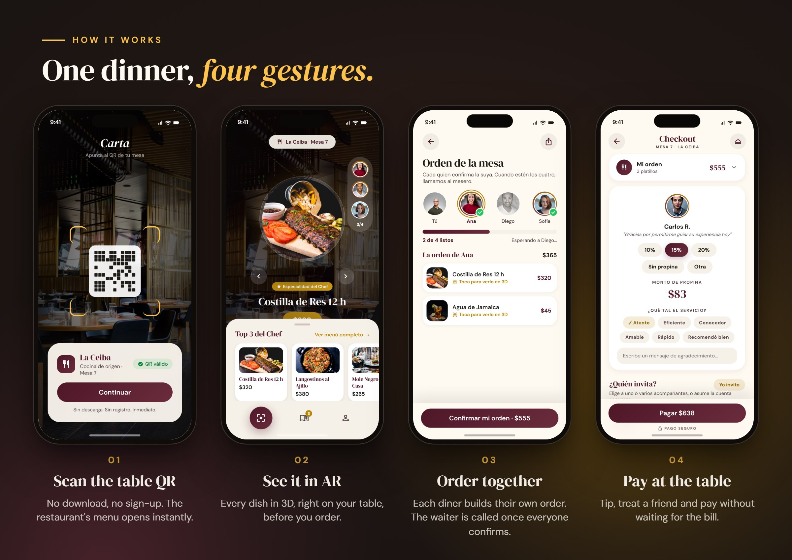
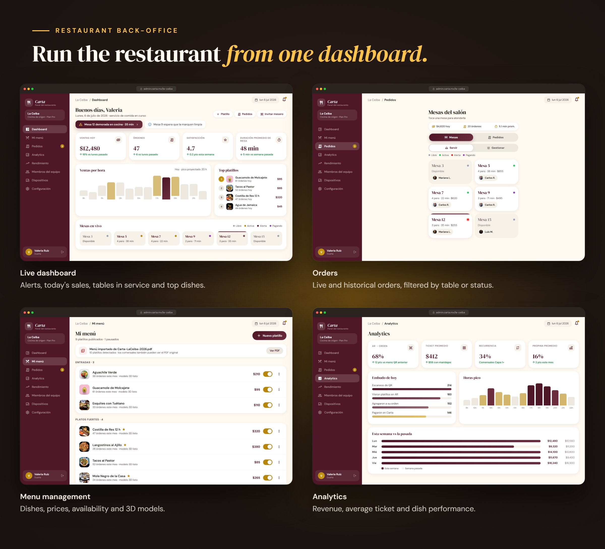

AR restaurant menu · Mexico & LATAM
Carta
The intelligent interface between diner and kitchen.
Scan the QR on your table — no app, no sign-up. See every dish in 3D on the table before you order, build the order together with everyone at the table, and pay without waiting for the bill.
How it works

For the restaurant
